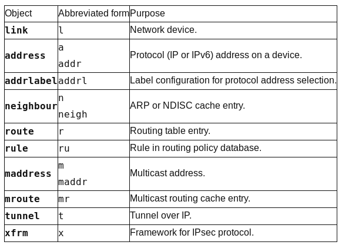

Network Virtualization Device¶
Network Bridge¶
Getting Setup¶
Introduction¶
เราสามารถสร้าง network bridge เพื่อทำหน้าที่เป็น virtual switch ใน linux เพื่อให้รองรับการสร้าง vm guest โดย vm จะเชื่อมต่ออยู่กับ Network Adapter ที่สร้างที่อยู่บน bridge เดียวกันจะสามารถสื่อสารระหว่างกันได้ เหมือนกับการต่ออยู่กับ physical switch. ก่อนหน้านี้เราใช้คำสั่ง brctl จาก package ชื่อ bridge-utils ในการสร้าง bridge และทำการเชื่อม bridgeกับ interface ปัจจุบัน สามารถใช้คำสั่ง ip ที่อยู่ใน package ชื่อ iproute3
IP Command¶
คำสั่ง ip เป็นคำสั่งที่อยู่ใน package iproute3 ส่วนคำสั่ง ifconfig จะอยู่ใน package nettools

Syntax
ip OBJECT COMMAND
ip [options] OBJECT COMMAND
ip OBJECT help
Object สามารถ แทนค่าได้ตามตารางด้านล่าง ทั้งแบบเต็มหรือแบบย่อ
cd ~
mkdir bridge
cd bridge
vagrant init centos/7
vagrant up
vagrant ssh
sudo su -
su -
ip addr
ip addr show eth0
ip route show
traceroute google.com
//list interface
ip link
#เพิ่ม ip ให้ interface
# syntax: ip a add {ip_addr/mask} dev {interface}
// เลือก ip ที่อยู่ใน subnet 192.168.121.0/24
ip a add 192.168.121.20/24 dev eth0
ip a s eth0
#เปลี่ยนแปลงค่า MTU
ip link set mtu 9000 dev eth0
ip a s eth0
#เปลี่ยน route ให้ไปออกที่ eth2 และมี next ip 192.168.1.100
ip route add default via 192.168.1.100 dev eth2
ip route
#ลบ ip route
ip route del default via 192.168.1.100 dev eth2
สร้าง bridge (type bridge)
ip link
ip link add br0 type bridge
ip link
#เพิ่ม physical network interface ไปยัง bridge ที่สร้างมา
ip link set eth0 master br0
#เพิ่มip
ip addr add 192.168.1.100/24 dev br0
#ลบip
ip addr del 192.168.1.100/24 dev br0
Linux bridge¶
เพื่อเชื่อมเครื่องคอมพิวเตอร์ เข้าหากัน โดยการใช้ Mac Address (Layer 2) แทนที่จะเป็นการเชื่อมกันระหว่าง ip (Layer3) โดยปรกติ linux network จะป้องกันไม่ให้ส่ง traffice จาก interface หนึ่งไปอีก interface หนึ่ง เราอาจ ใช้ ip routing ให้ทำหน้าที่ในการส่งข้อมูล ด้วยการกำหนดค่า ใน sysctrl เป็นการทำ ip forward
cat /proc/sys/net/ipv4/ip_forward
vi /etc/sysctrl.conf
net.ipv4.ip_forward = 1
sysctl -p /etc/sysctl.conf
service network restart
cat /proc/sys/net/ipv4/ip_forward
Linux kernel ยังสามารถ bridge ระหว่าง interface เพื่อส่งผ่าน ethernet frame การสร้าง linux bridge ได้หลายหลายวิธี โดยมี kernel module
lsmod | grep bridge
bridge 126976 1 ebtable_broute
stp 16384 2 garp,bridge
llc 16384 3 stp,garp,bridge
- สร้างด้วย iproute2 คำสั่ง ip
- สร้างด้วย bridge-utils คำสั่ง brctl
iproute2¶
#bridge ชือ br0
ip link add br0 type bridge
ip link
ip link set dev br0 up
#เพิ่ม interface (eth0) ไปยัง bridge ต้องอยู่สถานะ up
ip addr flush eth0
ip link set eth0 up
ip link set eth0 master br0
#ดูสถานะ
bridge link
#ถอด eth0 จาก br0
ip link set eth0 nomaster
#ลบ bridge
ip link delete br0 type bridge
bridge-utils¶
#bridge ชือ br0
brctl addbr br0
brctl show
ip link set dev br0 up
ip addr flush eth0
brctl addif br0 eth0
brctl show
brctl showmacs br0
#mac ของ bridge คือ mac ของ eth0
#กำหนด ip
ip addr add 10.0.0.10/24 dev br0
ip addr show br0
brctl showmacs br0
#ลบbridge ต้อง down ก่อน
ip link set dev br0 down
brctl delbr br0
ที่ทำมาทั้งหมด จะหายไปเมื่อมีการ reboot เครื่อง เนื่องจากเป็นเพียง session เท่านั้น เพื่อต้องการให้การเปลี่ยนแปลง สามารถเป็นแบบ ถาวร จะต้องทำการสร้าง config file ให้แก่ br0 ที่ /etc/sysconfig/network-scripts/ifcfg-br0 และทำการแก้ไข /etc/sysconfig/network-scripts/ifcfg-eth0
/etc/sysconfig/network-scripts/ifcfg-br0:
DEVICE=br0
TYPE=Bridge
IPADDR=10.0.0.10
PREFIX=24
ONBOOT=yes
/etc/sysconfig/network-scripts/ifcfg-eth0:
DEVICE=eth0
BRIDGE=br0
TYPE=Ethernet
ONBOOT=yes